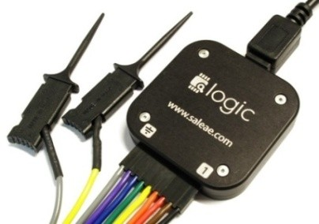
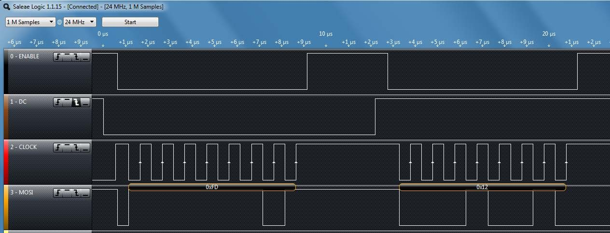
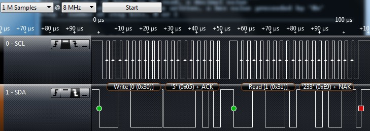

Lab 2 - Serial Interfacing with SPI and I2C
Overview
In this lab, you will use SPI to interface the CC3200 LaunchPad to a color OLED display. You will also use I2C to communicate with an on-board Bosch BMA222 acceleration sensor. Your application program will detect the XY tilt of your board based on BMA222 readings and use the tilt to control an icon on your OLED display. You will also use a Saleae logic probe to capture and display SPI and I2C signal waveforms.
Learning Objectives
At the end of this lab, students should be able to:
- Describe the connection topology of SPI and I2C devices
- Describe at a high level the protocol state machine for SPI and I2C
- Connect and configure SPI and I2C-based peripherals with a microcontroller
- Write code to interface a MCU with SPI and I2C devices
- Configure a logic analyzer for observing digital signals
Requirements and Dependencies
Hardware Requirements
- 2 Adafruit OLED Breakout Board - 16-bit Color 1.5" (product id: 1431) on small breadboards
- 1 Saleae USB Logic Analyzer Jumper wires
- (Optional) USB Flash Drive for saving code
Note: Do not lose the shorting blocks (jumpers) that come with the board. They are used to configure different hardware functions on the board, and may be needed for this and future labs. Unused shorting blocks should be kept on the board attached to a single header pin.
Software Requirements
- CCS
- Saleae Logic 2 Software
- (Recommended) Git and GitHub1
[1]: We highly recommend using Git and GitHub for source code version control starting with this lab. If you are unfamiliar with git and GitHub, you can learn more about it from this youtube video
Lab Datasheets
Refer to the following technical documents, which should be posted on the course website:
- CC3200 Technical Reference Manual
- CC3200 LaunchPad User Guide
- CC3200 LaunchPad Schematic
- CC3200 Datasheet
- SSD1351 128 RGB x 128 Dot Matrix OLED/Common Driver with Controller Advance Information
- OLED Display Module Product Specification (Doc No. SAS1-D038-A)
- Bosch BMA222 Data sheet (Accelerometer)
Background - Synchronous Serial Protocols
Synchronous serial protocols, particularly SPI and I2C are ubiquitous in embedded systems. They are the primary mode of communication between the microcontroller and the subsystems it controls. Spending time to gain an in-depth understanding of these protocols is a valuable effort, as it will help you greatly when debugging communications between components in your systems. A short primer on the topics follows to give you a high-level overview, but is by no means comprehensive.
SPI
Serial Peripheral Interface (SPI) is a 3 or 4 wire communication protocol designed for high-speed, high-throughput connections. Commonly, the 4 signals in SPI are COPI, CIPO, SCLK, and CS. COPI and CIPO are often also referred to as MOSI and MISO. SPI is a full-duplex communication protocol, where the controller sends data to the peripheral on the COPI line, and simultaneously receives data on the CIPO line. The communication speed is determined by the SCLK signal's frequency, generated by the controller.
SPI can support multiple devices on a shared bus, where a single controller can communicate with many peripherals. There are 2 wiring configurations that are commonly used to accomplish this: the Star Topology and the Daisy Chain Topology.
I2C
Inter-Integrated Circuit (I2C) protocol is a 2-wire communication protocol designed for simple hardware configuration and flexibility. The 2 signals of relevance in I2C are SDA and SCK. I2C is a half-duplex communication protocol, where the controller initiates communication with the peripheral and indicates whether the operation is a write to the peripheral or a read from it. Regardless, like SPI, the communications are synchronized by the clock signal that the controller generates.
I2C can also support multiple devices on a shared bus, and can even support multiple controllers with multiple peripherals, with additional constraints on the protocol steps.
Part I: Controlling the OLED via Serial Peripheral Interface (SPI)
In this part, you will interface to the 128x128 color organic light-emitting diode (OLED) display to the CC3200 LaunchPad using SPI.
Running
spi_demo on two CC3200 LaunchPads
As a starting point, you should study, import, build, and test the
spi_demo project on two CC3200 LaunchPads. The project is
documented on TI's website here.
In this demo, one launchpad will be programmed as the SPI controller, and the other as the peripheral. Since they must both be programmed, and CCS will not allow you to connect to multiple devices from the same instance and workspace, you have a few options:
- Program each launchpad from a separate computer
- Flash one launchpad with uniflash before running the other on CCS
- Launching 2 instances of CCS with different workspaces and connecting to separate devices.
When programming the SPI controller board, you should set
MASTER_MODE to 1 in main.c:
#define MASTER_MODE 1For the SPI peripheral board, you should set MASTER_MODE
to 0:
#define MASTER_MODE 0The TI documentation describes the wiring between the two LaunchPad boards. Each LaunchPad will also connect to its own serial terminal window.
Note that you can use a single host computer running two instances of CCS and two serial terminals or you could have each LaunchPad connected to a separate computer. As described in the documentation:
Always execute master application followed by slave application to avoid slave SPI receiving garbage.
Implement OLED interface using SPI
For the SPI interface to the OLED, you will need to use the interface signals shown in the table below.
Note that you will use GPIO signals configured as
outputs to control the DC (Data/Command), the OLEDCS
(OC) and the RESET signals on the OLED. You can choose any
unused GPIO signals on the LaunchPad headers P1 or
P2. However, check the LaunchPad schematic to verify that
the signals are truly available. For example, the GPIO on
P2.9 (Dev Pin #55) is the UART0_TX signal and
is not available for GPIO when the console window is used.
Additionally Do not use the LaunchPad’s RESET_OUT signal
for the OLED RESET since you should be able to reset the
OLED independently from the CC3200 LaunchPad.
Note: We are using a GPIO signal to control the
OLEDCSinstead of the dedicatedSPI_CSsignal because we plan multiple SPI devices on the CC3200’s general-purpose SPI port.
Note: You should be using the TI SysConfig Tool to enable the SPI, UART, and GPIO peripherals. Remember to uncheck CTS and RTS under the UART module, and configure the GPIO input/output setting. You will not need Output OD (open drain)
| OLED signal | LaunchPad interface |
|---|---|
| MOSI (SI) | SPI_DOUT ( MOSI) |
| SCK (CL) | SPI_CLK (SCLK) |
| DC | GPIO |
| RESET (R) | GPIO |
| OLEDCS (OC) | GPIO |
| SDCS (SC) | n.c. (no connection) |
| MISO (SO) | n.c. (no connection) |
| CD | n.c. (no connection) |
| 3V | n.c. (no connection) |
| Vin (+) | 3.3V |
| GND (G) | GND |
Adafruit provides a link to an open source graphics library for this display. The code is written for Arduino so we need to port it to the CC3200. We will provide modified library functions with the Arduino-specific code removed or commented out.
Your task will be to write the low-level functions
WriteData() and WriteCommand(), which use the
SPI port, to write a data or command byte to the OLED. You should study
the SPI example program that you tested in Part 1.
The WriteData() and WriteCommand()
functions allow you to make use of the higher-level OLED library
functions. Look for TODO comments in the
Adafruit_OLED.c and test.c files for specific
tasks.
Lab Checkoff Task 1
Write a test program that mimics the Arduino example
test.ino found on github
Your test program for the OLED display should do the following:
- Print the full character-set found in the font table in
glcdfont.h. - Print the string “Hello world!” to the display
- Display a pattern of 8 bands of different colors horizontally across the full OLED display.
- Display a pattern of 8 bands of different colors vertically across the full OLED display.
- Call the
testlines()function to display diagonal lines. - Call the
testfastlines()function to display a rectangular grid pattern. - Call the
testdrawrects()function to draw a pattern of rectangles. - Call the
testfillrects()function. - Call the
testfillcircles()andtestdrawcircles()functions. - Call the
testroundrects()function. - Call the
testtriangles()function.
Note: There should be a small delay between calling each of these functions to allow each pattern to be clearly seen. Your program should be an infinite loop that continually cycles through the specified test patterns.
Demonstrate the modification to your TA to receive checkoff. You may continue to the next part in the meantime.
Verifying SPI waveforms using a Saleae logic
To use the logic analyzer on your personal machine, you will need to install the Logic 2 software. The link can be found on the lab setup page.
The Saleae User Guide can be found online
Note: When plugging the wire harness into the logic analyzer pod, notice that the orientation is shown on the bottom of the pod. Make sure that the ground symbol on the bottom of the Saleae module is aligned with the grey wire. Black is data Channel 0, Brown is Channel 1 and so on (the colors follow the color code for resistor values). You should make the signal connections with both the CC3200 LaunchPad and the Saleae logic probe unpowered!
The Saleae application includes various serial protocol analyzer, including SPI. Turn on the SPI analyzer. To configure the SPI analyzer, click on the gear icon and select Enable Settings from the menu options.
Capture an SPI waveform using the Saleae logic probe for verification. Use
Options > Save Screen Regionfeature to save a picture of your SPI waveforms for your lab report. Another method is to take a screenshot using the Windows Snipping Tool orCmd+Shift+4on Mac to capture the area on the screen. You will need to explain how the waveform you captured is related to your software. An example screen-shot is shown below.
Lab Checkoff Task 2
Demonstrate to your TA that you captured the SPI waveform
using the Saleae logic program. For this purpose, you should
capture the very first packets transmitted from the micro controller. To
be more specific, the first few lines of codes in the
Adafruit_Init program are the WriteData() and
WriteCommand(), and the Data/Command is sent through the
SPI to the OLED board. You should confirm these with your code
and explain how the captured waveform relates to these
instructions.
The captured SPI waveform should be included in your lab report with a description of the data it contains and how it relates to the code you wrote.
Part II: Controlling the BMA222 accelerometer with I2C
In this part, you will interface to the Bosch BMA222 accelerometer on the CC3200 Launchpad using I2C. You will then write an application program that uses the acceleration data to control a graphical icon on your OLED.
Running
i2c_demo on the CC3200 LaunchPad
As a starting point, you should study, import, build, and test the
i2c_demo project on a CC3200 LaunchPad. The project is
documented here.
In addition, you should study the Bosch BMA222 Data sheet to understand how the acceleration sensor can be used. For example, the acceleration data is described in Section 4.4.1 and includes the following basic information:
“The width of acceleration data is 8 bits given in two’s complement representation. The 8 bits for each axis are given in registers (
0x03)acc_x, (0x05)acc_yand (0x07)acc_z.”
You can use the i2c_demo program to see what kinds of
acceleration data you get for various tilt angles using the readreg
command as shown below, where the BMA222 has I2C device address
0x18. The following three commands read the acceleration
data for the x, y and z axes, respectively.
cmd# readreg 0x18 0x3 1
cmd# readreg 0x18 0x5 1
cmd# readreg 0x18 0x7 1Another way to read the data is to read multiple bytes at once, such as in the command below. This command will read the new data flag and the acceleration data for the x, y and z axes, respectively.
cmd# readreg 0x18 0x2 6Verifying I2C waveforms using a Saleae logic
Set up your Saleae logic probe to capture I2C waveforms by enabling
the I2C Analyzer. You will need to connect three wires: Ground,
I2C_SCL, and I2C_SDA.
To avoid damaging the electronics, you should always make the signal
connections with both the CC3200 LaunchPad and the Saleae logic probe
unpowered. As before, make sure that the
ground symbol on the bottom of the Saleae module is aligned with the
grey wire and connect the grey wire to one of the CC3200 GND pins. You
can check the pinmux.c file in the i2c_demo
project to find out which pins are used for I2C_SCL and
I2C_SDA. Connect two of the Saleae probes, such as the
Black and Brown leads, to the appropriate header pins.
Double-check your ground and signal connections before you turn on the power to the CC3200 LaunchPad.
Lab Checkoff Task 3
Capture two I2C waveforms using the Saleae logic probe, one reading the x axis data and one reading the y axis data. Explain which command was used to generate each waveform and how the waveform corresponds to what you expect to see. An example screen-shot of an I2C waveform is shown below.
Include images of both waveforms in your lab report.
Part III: Sliding Ball
In this part, you will use the accelerometer to move a small “ball” (a filled circle icon) with a radius of about 4 pixels (± 2) around on the OLED display.
The accelerometer output can be used to determine the accelerometer pitch and roll orientation angles, which can be used to control the motion of the ball left, right, up and down.
Requirements:
Initially, you should display the ball at the center of your OLED display. When the CC3200 Launchpad is flat, the ball should be stationary on the display.
Rotating the accelerometer around the x-axis (roll) should move the ball left and right. The steeper the roll angle, the faster the ball should scroll across the OLED display.
Rotating the accelerometer around the y-axis (pitch) will move the ball up and down on the OLED display, where the speed of the ball should be proportional to the pitch angle.
When the ball reaches the edge of the OLED display, it should not move any further in that direction. That is, it should not scroll off the screen, but should stop at any edge.
Note 1: Since the Z measurement is not used, you can disable or ignore the Z measurements.
Note 2: You should be able to tilt the x and y axes simultaneously to move the object in any arbitrary direction on the display. For example, you should be able to move the object from the center directly to any of the four corners. The tilt sensitivity should such that you can precisely control the position of your object, while still being able to quickly move larger distances if needed.
Lab Checkoff Task 4
Demonstrate to your TA that you can move the ball up, down, left and right across the OLED display by tilting the CC3200 Launchpad accelerometer about the x and y axes. Show that you can move the ball from the center of the display to each corner of the display and then back to the center.
Demonstrate that you can control the speed of the ball’s motion by changing the tilt angle about the x and y axes with the following specifications:
The ball should be at maximum speed when the tilt angle is 90 degrees (i.e. freefall). At maximum speed, it should take most 2 seconds to move the ball from one edge of the display to the other.
When the accelerometer is barely tilted, the ball should move very slowly. You should be able to precisely control the motion of the ball on the OLED display, stopping it at any location on the display.
You should be able to move the ball at any arbitrary angle across the OLED display.
Lab Report
Refer to the general lab report instructions for general formatting and guidelines.
Your lab report should include:
- A soft-copy of your well-written, well-commented code for
Task 4
- Include your names in the header comments of the file containing your main program.
- This can be a copy of the entire project directory (which you can
export in CCS to a zip file by Right-Clicking the project name and
selecting
Export -> General -> Archive Fileand specifying the location)
- A well-written PDF report that contains, in addition to the general
guidelines:
- An image of an SPI waveform captured by your Saleae logic probe using the SPI protocol analyzer. Explain how the waveform corresponds to the known lines of code in your program, as well as the SPI mode you used for the OLED interface and why you chose that mode.
- Two images of I2C waveforms captured by your Saleae logic probe using the I2C protocol analyzer. Explain how the waveforms correspond to the commands or instructions that caused them.
- A description of any noteworthy difficulties you encountered in constructing your solution.